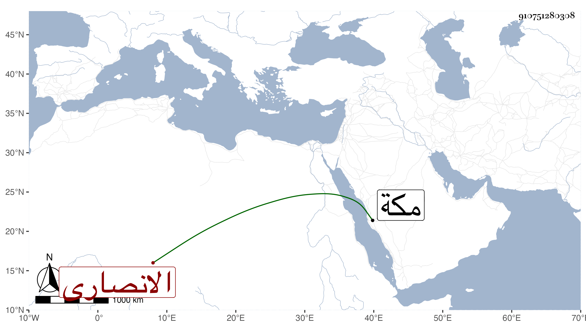

0902Sakhawi.DawLamic.ITO20230111-ara1.EIS1600.910751280308
Biography ID: 910751280308
785
منصورة ابنة أبي القسم بن أبي العباس أحمد بن محمد بن عبد الله بن عبد المعطي الانصارى شقيقة القاضي عبد القادر وأم الخير ؛ أمهم أم الحسين سعادة ابنة عبد الملك بن محمد بن عبد الملك بن عبد الله المرجاني ، تزوجها أبو حامد ابن الضياء فولدت له أبا بكر وعمر ، وماتت بمكة في ربيع الاول سنة ست وأربعين .
